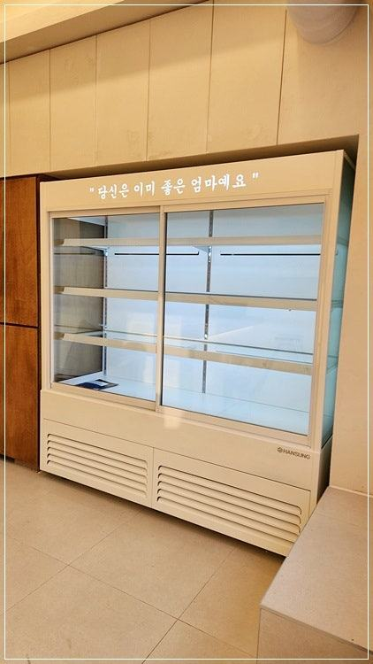
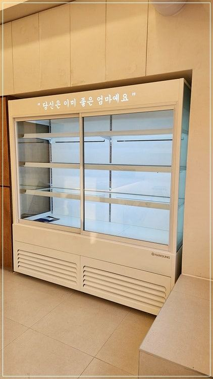
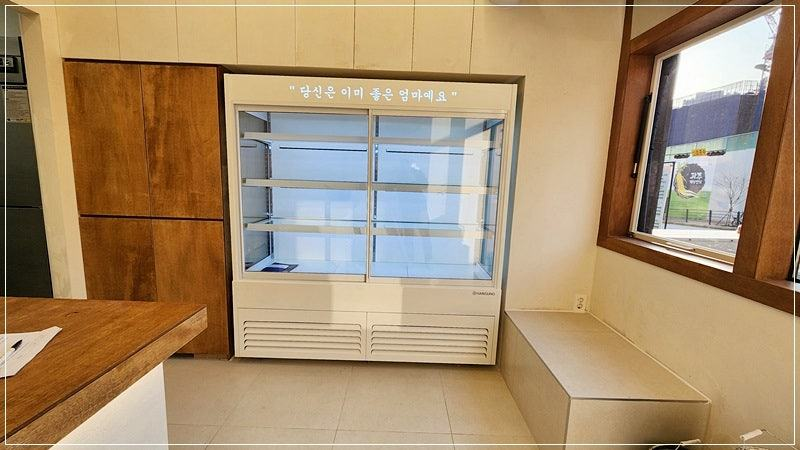
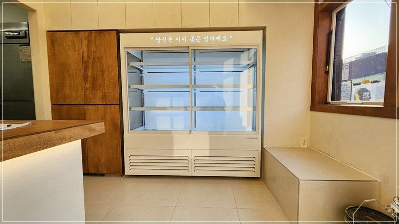
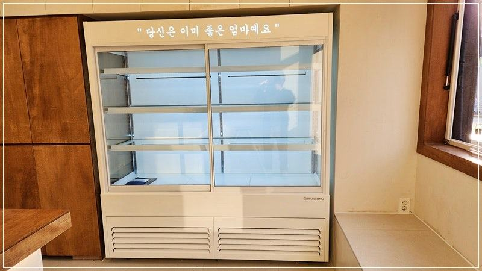
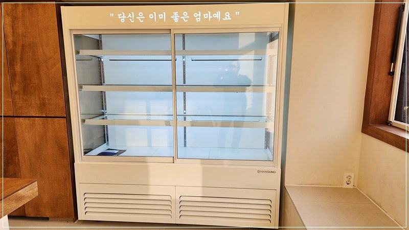
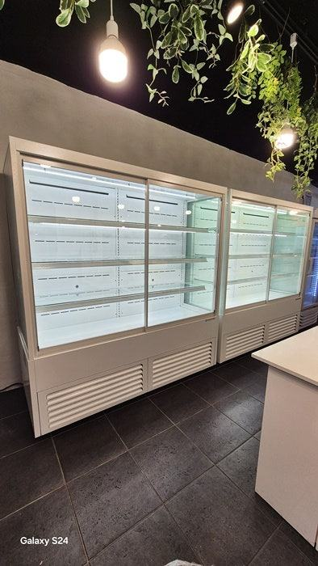

반찬(진열)쇼케이스
반찬쇼케이스 온도, 설정값보다 먼저 봐야 할 것들

반찬쇼케이스 온도는 반찬 종류와 용기, 진열 위치에 따라 맞는 값이 다르기 때문에 설정값 하나보다 칸별로 실제 온도가 고르게 유지되는지가 더 중요합니다. 뜨거운 반찬을 바로 넣거나 문을 자주 열어 두는 습관만 고쳐도 온도가 훨씬 안정됩니다.
안녕하세요. 반찬가게에 들어가는 냉장 진열장을 설계부터 직접 하는 한성쇼케이스입니다.
반찬가게 사장님들께 자주 받는 질문 중 하나가 "온도를 몇 도로 맞춰 놔야 하나요?"입니다. 그런데 막상 매장에 가 보면 설정값보다 다른 데서 문제가 생기는 경우가 더 많습니다.
나물은 마르고, 무침은 물이 생기고, 젓갈은 냄새가 옮겨 가는 식이죠. 모두 온도와 관련이 있지만 숫자를 바꾼다고 바로 해결되지는 않습니다.
오늘은 반찬쇼케이스 온도를 안정적으로 지키기 위해 설정값보다 먼저 확인해야 할 부분과, 설정할 때 흔히 하는 실수를 정리해 보겠습니다.
1. 반찬마다 맞는 온도가 다른 이유
반찬가게 진열장에는 수분이 많은 무침, 기름기 있는 볶음, 국물이 있는 조림, 염도가 높은 젓갈과 장아찌가 한꺼번에 들어갑니다.
수분과 염도가 다르니 같은 온도에서도 상하는 속도와 마르는 속도가 다릅니다.
그래서 적정 온도를 숫자 하나로 정하기보다, 가장 예민한 반찬을 기준으로 설정하고 나머지를 칸 배치로 조정하는 편이 현실적입니다.
구체적인 값은 판매하는 반찬 구성과 위생 기준에 따라 달라지니 메뉴를 먼저 정리해 두시는 게 좋습니다.
- 무침·나물처럼 예민한 반찬을 기준으로 잡으세요.
- 젓갈·장아찌처럼 냄새가 강한 반찬은 칸을 따로 두세요.
2. 칸마다 온도가 다르게 느껴질 때
같은 쇼케이스 안에서도 냉기가 나오는 쪽과 문 쪽, 위 칸과 아래 칸의 체감 온도가 다를 수 있습니다.
특히 반찬 용기를 빽빽하게 채우면 냉기 순환 길이 막혀 안쪽만 차갑고 앞쪽은 미지근해지기 쉽습니다.
온도계를 칸마다 하나씩 두고 영업 시작 전과 점심 피크 뒤에 한 번씩 확인해 보세요. 특정 칸만 계속 높게 나온다면 설정값을 내리기 전에 그 칸의 용기 간격과 냉기 토출구가 막혀 있지 않은지부터 보셔야 합니다.
- 용기 사이에 손가락 하나 들어갈 정도의 간격을 두세요.
- 냉기 나오는 구멍 앞을 용기로 막지 마세요.
- 피크 시간 전후 온도를 비교해 기록해 두세요.


3. 설정할 때 흔히 하는 실수
가장 흔한 실수는 금방 만든 따뜻한 반찬을 그대로 진열장에 넣는 것입니다. 열기를 품은 용기가 들어가면 주변 반찬까지 함께 온도가 올라가고, 유리 안쪽에 김이 서려 손님에게 반찬이 잘 보이지 않습니다.
한 김 식힌 뒤 넣는 것만으로 진열장 부담이 크게 줄어듭니다.
두 번째는 온도가 불안하다고 설정값을 계속 낮추는 경우입니다. 너무 낮추면 나물과 전 종류가 마르고 표면이 굳어 맛이 없어 보입니다.
세 번째는 앞문형 진열장에서 손님 응대 중 문을 열어 둔 채로 두는 습관인데, 이 경우 설정을 바꾸기보다 동선을 바꾸는 편이 낫습니다.
4. 영업 마감 후 온도 관리
마감 후에도 진열장은 계속 돌아갑니다. 남은 반찬은 랩이나 뚜껑을 덮어 수분이 날아가지 않게 하고, 유리 표면과 패킹에 묻은 양념은 그날 닦아 두세요.
양념이 굳으면 문이 꽉 닫히지 않아 밤새 냉기가 새는 원인이 됩니다.
아침에 출근해서 진열장 온도부터 확인하는 습관을 들이시면 이상이 생겼을 때 반찬을 채우기 전에 알아챌 수 있습니다.
체크리스트
- 가장 예민한 반찬 기준으로 설정했는지
- 칸별 온도계와 피크 전후 기록
- 용기 간격과 냉기 토출구 확보
- 따뜻한 반찬은 식힌 뒤 진열
- 문 패킹 양념 자국 매일 청소
온도 유지까지 설계에 넣은 신규 반찬가게 진열장
신규 반찬가게를 창업하시면서 연락을 주신 대표님의 진열장입니다. 1인 가구와 맞벌이 손님이 많은 상권이라 매장 분위기는 깔끔하고 트렌디하게 가져가고 싶다는 요청이 있었고, 상담을 거쳐 디자인과 설계를 함께 잡았습니다.
반찬은 손님이 바로 먹는 음식이라 이번 제작에서는 외관만큼 온도 유지에 신경을 썼습니다. 반찬쇼케이스 설계를 오래 해 온 디자이너가 처음부터 끝까지 도면을 맡았고, 제품 개발 센터에서 온도 유지와 설계를 검토한 뒤 자동화 공정으로 제작했습니다.
출고 전에는 119가지 품질 테스트를 거쳐 납품했습니다.










자주 묻는 질문
반찬쇼케이스 온도는 몇 도로 맞춰야 하나요?
판매하는 반찬 구성과 용기, 위생 기준에 따라 맞는 값이 달라서 한 가지 숫자로 말씀드리기 어렵습니다.
가장 예민한 반찬을 기준으로 잡고 칸별 실제 온도를 확인하며 조정하시길 권합니다.
유리에 김이 자주 서리는데 고장인가요?
따뜻한 반찬을 바로 넣었거나 매장이 습할 때 자주 생기는 현상입니다. 반찬을 식혀서 넣어도 계속된다면 결로 방지 유리나 도어 상태를 점검받아 보세요.
온도가 갑자기 안 내려가면 어디로 연락하나요?
대표전화 031-986-2458로 접수하시면 됩니다. 한성쇼케이스는 전국 240여 개 A/S 센터를 운영하고 있어 지역 매장도 가까운 곳에서 대응합니다.
매장 조건에 맞춰 만드는 한성쇼케이스
원하시는 제품 사진과 설치할 공간 사진만 보내 주셔도 매장에 맞는 구성을 추천해 드립니다.
- 전국 240여 개 A/S 전담 센터 운영
- 본사 대량 자재 매입으로 품질 대비 합리적인 가격
- 유럽제·삼성 냉각 콤프레셔 적용
- 국내 최초 쇼케이스 전문 디자이너 상주
매장 폭과 원하는 진열 구성을 알려 주세요. 실측과 견적을 안내해 드립니다.
031-986-2458